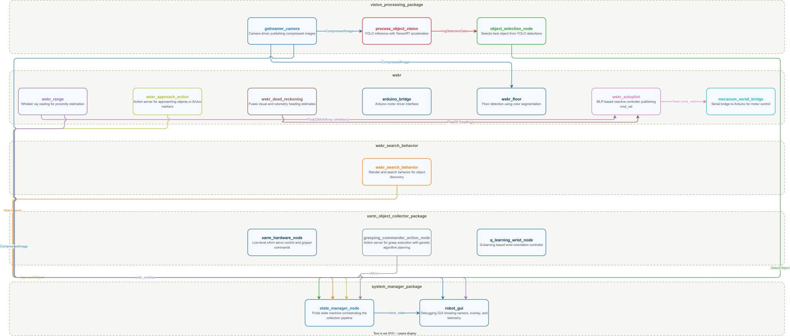
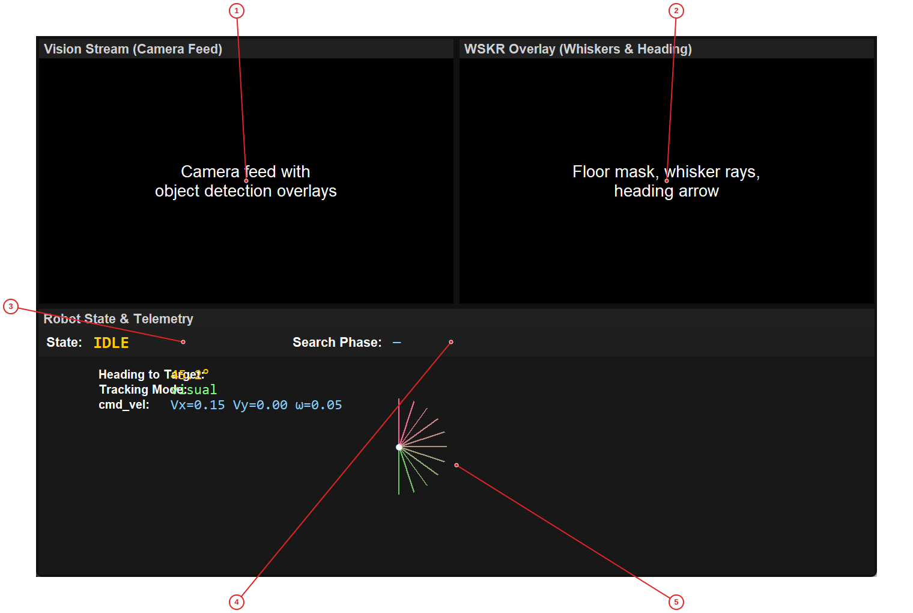
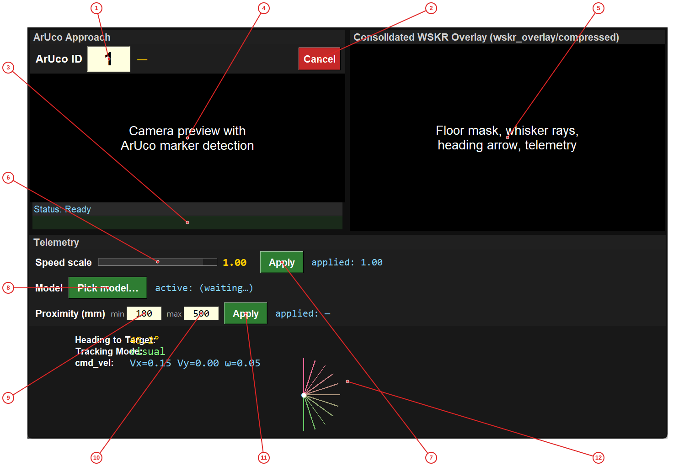

The UofI Hand-Built Robot is a ROS 2-based autonomous robot system built by students at the University of Illinois. The robot uses a mecanum-wheel drive base for omnidirectional movement, a fisheye camera for computer vision, and a 5-DOF xArm manipulator for picking up objects.
The system is controlled by a finite state machine (FSM) that orchestrates the entire object collection pipeline: searching for objects, selecting the best target, approaching it, grasping it with the arm, finding the drop box, and delivering the object. The vision system uses YOLO with TensorRT inference to detect objects, while the navigation system uses a novel "whisker" proximity sensing approach that casts virtual rays to estimate distances to objects.
The project is designed for student learning and experimentation. It includes multiple debugging GUIs, tuning tools, and supports the Foxglove visualization platform for remote monitoring. The entire system runs on an NVIDIA Jetson computer mounted on the robot, making it a fully autonomous platform.
Set up your ROS 2 workspace by sourcing the setup file:
bash
source /opt/ros/humble/setup.bash # Linux
# or on Windows with ROS 2 installed:
call C:\dev\ros2_humble\local_setup.bat
Build the workspace:
bash
cd C:\GITHUB Repos\UofIHandBuiltRobot
colcon build --symlink-install
Source the workspace:
bash
source install/setup.bash # Linux
call install/setup.bat # Windows
Launch the full system with GUI:
bash
ros2 launch system_manager_package robot_bringup.launch.py launch_gui:=true
You should see the Robot State GUI appear showing the camera feed, WSKR overlay, and current robot state. The robot is now ready to accept commands.
# Install ROS 2 Humble
sudo apt update
sudo apt install ros-humble-desktop-full
# Install additional packages
sudo apt install python3-pip python3-venv
pip3 install opencv-python-headless numpy pillow
# Source ROS 2
source /opt/ros/humble/setup.bash
cmd
setx PATH "%PATH%;C:\dev\ros2_humble\bin"# Navigate to the project root
cd C:\GITHUB Repos\UofIHandBuiltRobot
# Build with colcon
colcon build --symlink-install
# Source the workspace
source install/setup.bash # Linux
call install\setup.bat # Windows
Foxglove is a modern robotics visualization tool that provides real-time data streaming and debugging capabilities.
# Download Foxglove Studio for ARM64 (Jetson)
wget https://github.com/foxglove/studio/releases/latest/download/FoxgloveStudio-linux-arm64.deb
# Install the package
sudo apt install ./FoxgloveStudio-linux-arm64.deb
The foxglove_bridge package is already included as a dependency in the system_manager_package. To verify it's installed:
ros2 pkg list | grep foxglove
# Start the bridge (runs alongside your robot nodes)
ros2 launch foxglove_bridge foxglove_bridge_launch.xml port:=8765
ws://<jetson-ip-address>:8765foxglove_files/wskr_dashboard_remote.json from the projectros2 topic listInstall Python dependencies:
pip install -r requirements.txt
Key dependencies include:
- opencv-python: Computer vision operations
- numpy: Numerical computations
- pillow: Image processing
- tensorrt: GPU-accelerated inference (Jetson only)
- ultralytics: YOLO model inference
The project is organized as a ROS 2 workspace with multiple packages in the src/ directory:
UofIHandBuiltRobot/
├── src/
│ ├── arduino/ # Arduino serial bridge for motor control
│ │ ├── arduino/
│ │ │ └── mecanum_serial_bridge.py
│ │ └── launch/
│ │ └── arduino.launch.py
│ │
│ ├── gstreamer_camera/ # Camera driver using GStreamer
│ │ ├── gstreamer_camera/
│ │ │ └── gst_cam_node.py
│ │ └── launch/
│ │ └── gstreamer_camera.launch.py
│ │
│ ├── system_manager_package/ # Central FSM and GUI tools
│ │ ├── gui/
│ │ │ └── robot_gui.py # Main debugging GUI
│ │ ├── src/
│ │ │ └── state_manager.py # Finite state machine
│ │ ├── system_manager_package/
│ │ │ └── constants.py # All tunable parameters
│ │ └── launch/
│ │ ├── robot_bringup.launch.py
│ │ └── sys_manager.launch.py
│ │
│ ├── wskr/ # Whisker-based navigation
│ │ ├── wskr/
│ │ │ ├── wskr_autopilot.py # MLP-based reactive controller
│ │ │ ├── approach_action_server.py
│ │ │ ├── wskr_floor_node.py # Floor detection
│ │ │ ├── wskr_range_node.py # Whisker ray casting
│ │ │ └── dead_reckoning_node.py
│ │ └── launch/
│ │ └── wskr.launch.py
│ │
│ ├── wskr_search_behavior/ # Search and wander behavior
│ │ └── wskr_search_behavior/
│ │ └── search_supervisor.py
│ │
│ ├── vision_processing_package/ # YOLO inference and object selection
│ │ ├── src/
│ │ │ ├── process_object_vision.py
│ │ │ ├── object_selection.py
│ │ │ └── bbox_to_xyz_service_2D.py
│ │ └── launch/
│ │ └── vision_processing.launch.py
│ │
│ ├── xarm_object_collector_package/ # xArm manipulator control
│ │ ├── src/
│ │ │ ├── xarm_hardware_node.py
│ │ │ ├── Object_collector_action_server.py
│ │ │ ├── genetic_algorithm.py
│ │ │ └── controller_class.py
│ │ └── launch/
│ │ └── xarm_object_collector_ga.launch.py
│ │
│ ├── utilities/ # Debugging and tuning tools
│ │ ├── utilities/
│ │ │ ├── wskr_dashboard.py # Combined control dashboard
│ │ │ ├── floor_tuner.py # Floor detection tuner
│ │ │ ├── heading_tuner.py # Heading estimation tuner
│ │ │ ├── mecanum_teleop.py # Manual teleoperation
│ │ │ └── robot_control_panel.py
│ │ └── launch/
│ │ └── wskr_foxglove.launch.py
│ │
│ └── robot_interfaces/ # Custom ROS 2 message/action definitions
│
├── foxglove_files/ # Foxglove dashboard layouts
│ ├── wskr_dashboard_remote.json
│ └── wskr_default.json
│
├── requirements.txt # Python dependencies
└── docs/ # Documentation output
| Package | Purpose |
|---|---|
arduino |
Serial communication with Arduino motor controller |
gstreamer_camera |
Camera driver publishing compressed images |
system_manager_package |
FSM orchestrator and debugging GUI |
wskr |
Whisker-based proximity sensing and autopilot |
wskr_search_behavior |
Search and wander behavior for object discovery |
vision_processing_package |
YOLO object detection and selection |
xarm_object_collector_package |
xArm manipulator control with GA planning |
utilities |
Development and debugging tools |
robot_interfaces |
Custom ROS 2 message and action definitions |
This diagram shows the complete node graph when running robot_bringup.launch.py. The launch file includes four sub-launch files: sys_manager.launch.py (state manager), xarm_object_collector_ga.launch.py (xArm control), wskr.launch.py (navigation), and search_behavior.launch.py (search behavior). Each node is grouped by its package. Topics flow between nodes for sensor data, commands, and status updates.

All ROS 2 nodes launched by robot_bringup.launch.py, grouped by package. Topics connect nodes for data flow.
The robot's behavior is controlled by a Finite State Machine implemented in state_manager.py. The FSM manages the entire object collection pipeline through a series of states:
IDLE ──(command)──► SEARCH ──► SELECT ──► APPROACH_OBJ ──► GRASP
▲ │
│ ▼
│ FIND_BOX
│ │
│ ▼
◄────────── DROP ◄────────── APPROACH_BOX
| State | Purpose | Next State |
|---|---|---|
| IDLE | Robot is stationary, waiting for commands | SEARCH (on command) |
| SEARCH | Wander while looking for objects using YOLO | SELECT (object found) |
| SELECT | Pick the best object from current detections | APPROACH_OBJ |
| APPROACH_OBJ | Drive toward the selected object | GRASP (proximity reached) |
| GRASP | Pick up object with xArm | FIND_BOX (success) |
| FIND_BOX | Wander while looking for ArUco marker on drop box | APPROACH_BOX |
| APPROACH_BOX | Drive toward the drop box | DROP (proximity reached) |
| DROP | Open gripper to release object | SEARCH (loop continues) |
| STOPPED | Emergency stop - ignores most commands | IDLE (on "idle" command) |
| ERROR | Error state - requires manual intervention | IDLE (on "idle" command) |
/robot_command topic (e.g., "search", "stop")# Start searching for objects
ros2 topic pub /robot_command std_msgs/msg/String "{data: 'search'}"
# Stop the robot
ros2 topic pub /robot_command std_msgs/msg/String "{data: 'stop'}"
# Return to idle
ros2 topic pub /robot_command std_msgs/msg/String "{data: 'idle'}"
The WSKR (Whisker-based Sensorimotor Control for Robots) system uses a fisheye camera to estimate distances to objects:
The whisker system works like an insect's antennae - providing proximity information without requiring depth sensors.
The robot fuses two heading estimates:
When the visual heading becomes unreliable (object leaves camera view), the system switches to dead reckoning. When the object reappears, it switches back to visual tracking.
The autopilot uses a Multi-Layer Perceptron (MLP) trained with reinforcement learning:
The xArm uses a Genetic Algorithm to plan collision-free trajectories:
| Term | Definition |
|---|---|
| Whisker | A virtual ray cast from the camera to estimate distance |
| ArUco Marker | A fiducial marker (like a QR code) used for precise localization |
| YOLO | "You Only Look Once" - a real-time object detection neural network |
| TensorRT | NVIDIA's GPU inference optimizer for fast neural network execution |
| Dead Reckoning | Estimating position from wheel encoder data |
| Proximity | Distance to nearest obstacle along a whisker ray |
| Tracking Mode | Either "visual" (using camera) or "dead_reckoning" (using odometry) |
Launch the complete robot system and begin autonomous object collection. This workflow starts all nodes including the state machine, vision system, navigation, xArm control, and search behavior.
bash
source /opt/ros/humble/setup.bash
cd C:\GITHUB Repos\UofIHandBuiltRobot
source install/setup.bashbash
ros2 launch system_manager_package robot_bringup.launch.py launch_gui:=true
Wait for all nodes to start (about 10-15 seconds). You should see console output from each node.bash
ros2 topic pub /robot_command std_msgs/msg/String "{data: 'search'}"bash
ros2 topic pub /robot_command std_msgs/msg/String "{data: 'stop'}"bash
ros2 topic pub /robot_command std_msgs/msg/String "{data: 'idle'}"Main debugging dashboard showing live camera feed, WSKR navigation overlay, and real-time robot telemetry.

Labeled controls and displays:
Vision Stream panel — Live camera feed with YOLO detection bounding boxes overlaid
WSKR Overlay panel — WSKR navigation overlay showing floor mask, whiskers, and heading
Robot state display — Current FSM state (IDLE, SEARCH, SELECT, APPROACH_OBJ, etc.)
Search phase indicator — Current search behavior phase (WANDER, LOOK, etc.)
Telemetry canvas — Numeric telemetry: heading, tracking mode, cmd_vel, whisker fan diagram
The Robot State GUI provides comprehensive debugging information for the autonomous collection pipeline. The Vision Stream panel (1) shows the live camera feed with YOLO detection bounding boxes overlaid in different colors. The WSKR Overlay panel (2) displays the floor detection mask, whisker proximity rays, heading arrow, and current tracking mode. The State display (3) shows the current FSM state (IDLE, SEARCH, SELECT, etc.) in yellow text. The Search Phase indicator (4) shows the current phase of the search behavior (WANDER, LOOK, etc.). The Telemetry canvas (5) at the bottom displays numeric values for heading to target, tracking mode, cmd_vel commands, and a visual whisker fan diagram showing proximity distances. Use this GUI to monitor robot behavior during autonomous operation and debug issues with vision, navigation, or state transitions.
Use the WSKR Dashboard for manual control and debugging of the approach behavior. This GUI provides direct control over ArUco approach, speed scaling, model selection, and proximity parameters.
bash
ros2 run utilities wskr_dashboard
The dashboard will open with three panels.Combined control dashboard for ArUco approach, telemetry monitoring, and autopilot parameter tuning.

Labeled controls and displays:
ArUco ID entry — Enter the ArUco marker ID to approach (default: 1)
Cancel button — Cancel the current approach goal
Approach status label — Current approach goal state (Ready, Active, Success, Aborted)
Camera preview — Live camera feed with ArUco marker detection overlay
WSKR Overlay panel — Consolidated WSKR telemetry overlay with floor mask and whiskers
Speed scale slider — Adjust autopilot speed scale from 0.0 to 1.0
Apply speed button — Apply the selected speed scale to the autopilot
Pick model button — Select a different neural network model file
Proximity min entry — Minimum proximity distance for speed attenuation (mm)
Proximity max entry — Maximum proximity distance for speed attenuation (mm)
Apply proximity button — Apply the proximity limits to the autopilot
Telemetry canvas — Telemetry display: heading, tracking mode, cmd_vel, whisker fan
The WSKR Dashboard provides direct control over the approach behavior and real-time telemetry. The ArUco ID entry (1) lets you specify which ArUco marker to approach. Click Start Approach to begin, and Cancel (2) to abort. The Status label (3) shows the current goal state. The Camera preview (4) displays live video with ArUco marker detection (yellow box indicates the target marker). The WSKR Overlay (5) shows the consolidated navigation display. Use the Speed scale slider (6) to adjust autopilot speed from 0% to 100%, then click Apply (7). The Pick model button (8) opens a file dialog to select a different neural network policy. The Proximity min (9) and max (10) entries set the distance thresholds for speed attenuation—click Apply (11) to update. The Telemetry canvas (12) shows heading to target, tracking mode, cmd_vel values, and a whisker fan diagram. This dashboard is ideal for testing approach behavior and tuning autopilot parameters.
Test individual robot subsystems in isolation to verify correct operation and debug issues. This workflow covers testing the camera, vision, whisker system, state machine, and xArm independently.
Launch only the camera node:
bash
ros2 launch gstreamer_camera gstreamer_camera.launch.py
Verify the camera is publishing:
bash
ros2 topic hz /camera1/image_raw/compressed
You should see ~10 Hz output.
View the camera feed:
bash
ros2 run rqt_image_view rqt_image_view
Select /camera1/image_raw/compressed from the dropdown.
Launch camera and vision nodes:
bash
ros2 launch vision_processing_package vision_processing.launch.py
Check YOLO detections:
bash
ros2 topic echo /vision/yolo/detections
Point the camera at objects to see detection messages.
Test object selection:
bash
ros2 service call /select_object_service robot_interfaces/srv/SelectObject
Launch WSKR nodes:
bash
ros2 launch wskr wskr.launch.py
Monitor whisker lengths:
bash
ros2 topic echo /WSKR/whisker_lengths
Wave your hand in front of the camera to see distance changes.
Check floor detection:
bash
ros2 topic hz /wskr_overlay/compressed
Launch only the state manager:
bash
ros2 launch system_manager_package sys_manager.launch.py
Monitor robot state:
bash
ros2 topic echo /robot_state
Send test commands: ```bash # Should transition to SEARCH ros2 topic pub /robot_command std_msgs/msg/String "{data: 'search'}"
# Should transition to IDLE ros2 topic pub /robot_command std_msgs/msg/String "{data: 'idle'}"
# Should transition to STOPPED ros2 topic pub /robot_command std_msgs/msg/String "{data: 'stop'}" ```
Launch xArm nodes:
bash
ros2 launch xarm_object_collector_package xarm_object_collector_ga.launch.py
Check xArm connection:
bash
ros2 run xarm_object_collector_package test_xarm_connection.py
Test gripper service:
bash
# Open gripper
ros2 service call /open_gripper_service std_srvs/srv/Trigger
Launch WSKR with autopilot:
bash
ros2 launch wskr wskr.launch.py
Monitor cmd_vel output:
bash
ros2 topic echo /WSKR/cmd_vel
Provide synthetic whisker input (advanced):
bash
ros2 topic pub /WSKR/whisker_lengths std_msgs/msg/Float32MultiArray "{data: [200.0, 200.0, 200.0, 200.0, 200.0, 200.0, 200.0, 200.0, 200.0, 200.0, 200.0]}"
Launch search behavior:
bash
ros2 launch wskr_search_behavior search_behavior.launch.py
Send a search goal (requires action client):
python
# Create a test script or use rclpy in Python
Monitor search phase:
bash
ros2 topic echo /WSKR/search_phase
All tunable parameters are centralized in src/system_manager_package/system_manager_package/constants.py. This single source of truth ensures consistent behavior across all nodes.
CAMERA_WIDTH = 1920 # Capture resolution
CAMERA_HEIGHT = 1080
CAMERA_FPS = 30
CAMERA_PUBLISH_HZ = 10.0 # Throttled publish rate
FLOOR_BLUR_KERNEL = 9 # Gaussian blur size
FLOOR_COLOR_DIST_THRESH = 20 # LAB color distance threshold
FLOOR_GRADIENT_THRESH = 14 # Edge detection threshold
WHISKER_MAX_RANGE_MM = 500.0 # Maximum ray-march distance
WHISKER_SAMPLE_STEP_MM = 1.0 # Sample granularity
AUTOPILOT_MAX_LINEAR_MPS = 0.40 # Max forward/strafe speed (m/s)
AUTOPILOT_MAX_ANGULAR_RPS = 0.698 # Max rotation (40 deg/s)
AUTOPILOT_SPEED_SCALE = 1.0 # Global output scaling [0,1]
AUTOPILOT_PROXIMITY_MAX_MM = 500.0 # Distance for full speed
AUTOPILOT_PROXIMITY_MIN_MM = 100.0 # Distance for minimum speed
YOLO_CONFIDENCE_THRESHOLD = 0.5 # Discard low-confidence detections
YOLO_INPUT_SIZE = 640 # Model input resolution
YOLO_GPU_DEVICE = 0 # CUDA device index
SM_DELAY_SEARCH = 0.5 # Delay before search handler (s)
SM_DELAY_GRASP = 1.0 # Delay before grasp handler (s)
SM_MAX_GRASP_RETRIES = 1 # Grasp retry attempts
GRIPPER_OPEN_COUNT = 211.0 # Servo count for open
GRIPPER_CLOSE_COUNT = 687.0 # Servo count for closed
GRIPPER_BLOCK_TOLERANCE = 100.0 # Count gap indicating grasp
Edit the constants file:
bash
nano src/system_manager_package/system_manager_package/constants.py
Rebuild the workspace (required for changes to take effect):
bash
colcon build --symlink-install
source install/setup.bash
Restart the affected nodes or relaunch the full system.
Some parameters can be tuned at runtime using the WSKR Dashboard:
Use the Floor Tuner tool to interactively tune floor detection parameters:
ros2 run utilities floor_tuner
The tuner shows: - Live camera view - Floor mask preview - Sliders for blur, color threshold, gradient threshold - Save/Load buttons for parameter presets
Tune heading estimation parameters:
ros2 run utilities heading_tuner
Displays camera view with heading overlay and meridian visualization.
Most launch files accept runtime arguments:
# Launch with GUI
ros2 launch system_manager_package robot_bringup.launch.py launch_gui:=true
# Set ArUco marker ID for box search
ros2 launch system_manager_package robot_bringup.launch.py search_aruco_id:=5
# Adjust vision sampling rate
ros2 launch system_manager_package robot_bringup.launch.py vision_sample_hz:=1.0
# Adjust wander speed
ros2 launch wskr_search_behavior search_behavior.launch.py wander_speed_m_s:=0.15
# Change look duration
ros2 launch wskr_search_behavior search_behavior.launch.py look_duration_sec:=3.0
# Set confidence threshold
ros2 launch wskr_search_behavior search_behavior.launch.py confidence_threshold:=0.6
# Change camera rate
ros2 launch vision_processing_package vision_processing.launch.py camera_rate_hz:=15.0
# Select GPU device
ros2 launch vision_processing_package vision_processing.launch.py gpu_device:=0
# Disable bbox-to-xyz service
ros2 launch vision_processing_package vision_processing.launch.py launch_bbox_to_xyz:=false
Symptom: No images on /camera1/image_raw/compressed
Solutions:
1. Check camera device exists:
bash
ls -la /dev/video*
2. Verify camera is not in use by another process:
bash
fuser /dev/video0
3. Test camera with standard tools:
bash
v4l2-ctl --device=/dev/video0 --list-formats-ext
4. Check GStreamer pipeline:
bash
gst-launch-1.0 v4l2src device=/dev/video0 ! jpegenc ! filesink location=test.jpg
Symptom: Empty detections on /vision/yolo/detections
Solutions:
1. Verify TensorRT engine exists:
bash
ls -la src/vision_processing_package/models/*.engine
2. Check GPU utilization:
bash
tegrastats # On Jetson
3. Lower confidence threshold temporarily:
python
# In constants.py
YOLO_CONFIDENCE_THRESHOLD = 0.3
4. Ensure good lighting and clear view of objects
Symptom: /WSKR/whisker_lengths shows all zeros
Solutions:
1. Check floor detection is working:
bash
ros2 topic hz /wskr_overlay/compressed
2. Verify floor params are loaded:
bash
ros2 param get /wskr_floor floor_blur_kernel
3. Check camera is seeing the floor (not pointed at ceiling)
4. Adjust floor detection thresholds in Floor Tuner
Symptom: cmd_vel published but robot stationary
Solutions:
1. Check Arduino connection:
bash
ls -la /dev/ttyACM*
2. Verify serial port permissions:
bash
sudo usermod -a -G dialout $USER
# Then logout and login again
3. Check mecanum_serial_bridge output for errors
4. Test manual teleoperation:
bash
ros2 run utilities mecanum_teleop
Symptom: Robot stays in one state and won't transition
Solutions:
1. Check action servers are available:
bash
ros2 action list
2. Verify required topics are publishing:
bash
ros2 topic list
ros2 topic hz /robot_state
3. Check for error messages in state_manager_node output
4. Send "idle" command to reset:
bash
ros2 topic pub /robot_command std_msgs/msg/String "{data: 'idle'}"
Symptom: Grasp action completes but object not picked up
Solutions:
1. Check gripper servo positions:
python
GRIPPER_OPEN_COUNT = 211.0
GRIPPER_CLOSE_COUNT = 687.0
2. Verify object is within reach (check approach success)
3. Adjust gripper close tolerance:
python
GRIPPER_BLOCK_TOLERANCE = 100.0 # Increase if false positives
4. Test gripper manually:
bash
ros2 service call /open_gripper_service std_srvs/srv/Trigger
Symptom: Cannot connect to Foxglove WebSocket
Solutions:
1. Verify bridge is running:
bash
ros2 node list | grep foxglove
2. Check port is listening:
bash
netstat -tlnp | grep 8765
3. Ensure firewall allows the port:
bash
sudo ufw allow 8765
4. Try localhost connection first:
ws://localhost:8765
Symptom: Jetson fans spinning loudly, system sluggish
Solutions:
1. Reduce camera publish rate:
bash
ros2 launch vision_processing_package vision_processing.launch.py camera_rate_hz:=5.0
2. Lower YOLO inference rate in constants.py
3. Use throttled topics in Foxglove:
python
FOXGLOVE_CAMERA_THROTTLE_HZ = 2.0
FOXGLOVE_OVERLAY_THROTTLE_HZ = 5.0
4. Monitor with tegrastats:
bash
tegrastats
Symptom: ArUco markers not detected in approach
Solutions:
1. Verify marker ID matches:
bash
# In dashboard, enter correct ID
2. Check marker is in camera field of view
3. Ensure good lighting (no glare on marker)
4. Verify ArUco dictionary matches:
python
SEARCH_ARUCO_DICT = 'DICT_4X4_50'
5. Test with larger marker or closer distance
Check ROS 2 logs:
bash
ros2 log list
ros2 log show <node_name>
Enable debug logging:
bash
ros2 run <package> <node> --ros-args --log-level debug
Record a rosbag for analysis:
bash
ros2 bag record -a
Visualize in Foxglove or RViz:
bash
ros2 run foxglove_bridge foxglove_bridge_launch.xml
Generated by auto_labeler.